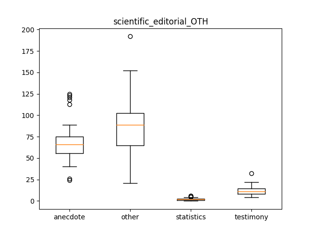

scientific_editorial_OTH
Describing the Data-Set
Mean, Median and Standard Deviation
|
anecdote |
other |
statistics |
testimony |
| median |
66.000000 |
89.000000 |
2.000000 |
11.000000 |
| mean |
67.638298 |
87.361702 |
1.851064 |
11.808511 |
| std |
22.614649 |
33.018000 |
1.584214 |
5.026053 |
QQ Plots
Histograms
Box Plot(s)

Normalization Test
stat: 0.906225442886, p-val:0.00114474853035
Not Normally distributed for OTH classified as anecdote
stat: 0.956594944, p-val:0.0788197517395
Normally distributed for OTH classified as other
stat: 0.884806513786, p-val:0.000244256167207
Not Normally distributed for OTH classified as statistics
stat: 0.905328989029, p-val:0.00107003015
Not Normally distributed for OTH classified as testimony
Significancy Test
Using friedmann-test
Using friedmann-test
using stats.friedmanchisquare
chisq: 133.85106383
p-value: 7.99964610039e-29
statistic: 861.267857143
p-value: 1.11022302463e-16
chi2:133.85106383
ranking[1.0, 3.8510638297872339, 2.0, 3.1489361702127661]
Post Hoc Analysis (holm_multitest):
------------------------------------------------------
Comparing: statistics vs other
z_value: 10.70573519
p_value: 0.0
adj_p_value: 0.0
--------------------------------------------------------------------------
Comparing: anecdote vs statistics
z_value: 8.06924816556
p_value: 6.66133814775e-16
adj_p_value: 3.33066907388e-15
--------------------------------------------------------------------------
Comparing: other vs testimony
z_value: 6.95073851885
p_value: 3.6337599596e-12
adj_p_value: 1.45350398384e-11
--------------------------------------------------------------------------
Comparing: anecdote vs testimony
z_value: 4.31425149446
p_value: 1.60144558892e-05
adj_p_value: 4.80433676675e-05
--------------------------------------------------------------------------
Comparing: statistics vs testimony
z_value: 3.7549966711
p_value: 0.000173343782164
adj_p_value: 0.000346687564328
--------------------------------------------------------------------------
Comparing: anecdote vs other
z_value: 2.63648702439
p_value: 0.00837694039232
adj_p_value: 0.00837694039232
--------------------------------------------------------------------------